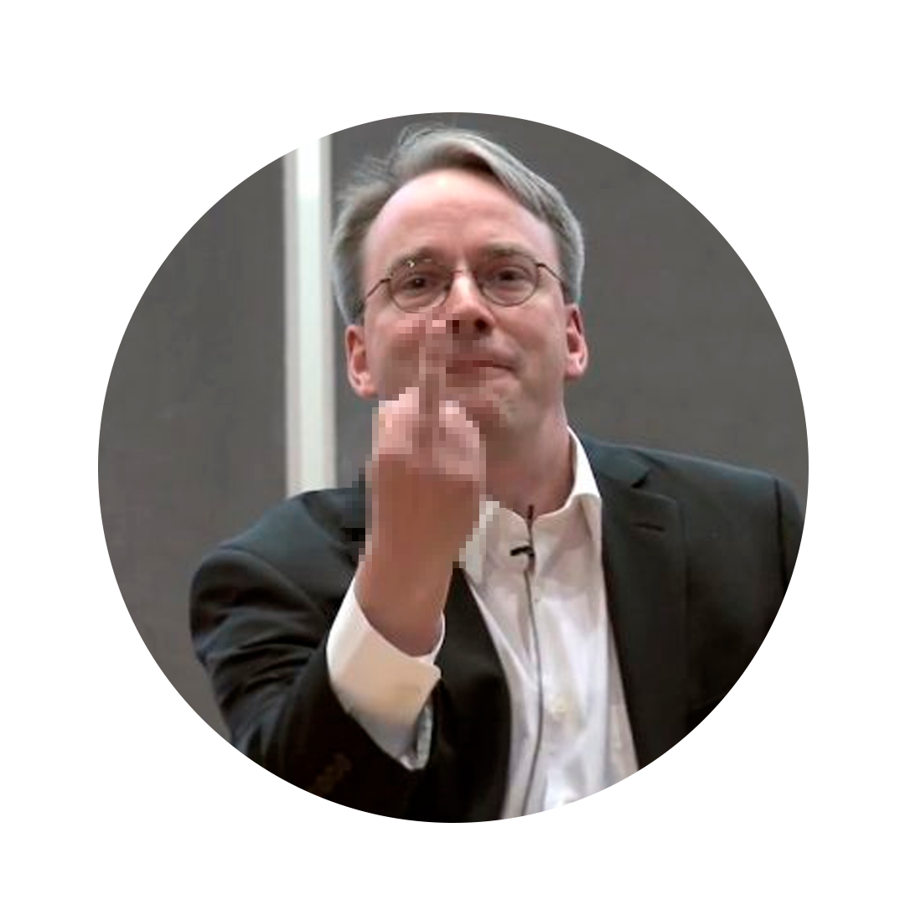

Bom momento a todos!
GitZero
Uma breve introdução ao mundo do git!
O que é git
- O que é open source
- O que é versionamento de código
- Como surgiu o git
Entendo o perfil de todos!
77% Considera que em uma escala de 0 a 5 sobre entender git, estão entre 0 e 3
83% utiliza Windows
73% utiliza Vscode
- 16% Utiliza Geany
O que é git?
Git é uma ferramenta open source criada para versionamento de código.
O que é open source:
- Diferentes de softwares enterprise que são controlados por grandes empresas, o git é um código aberto no qual permite você visualizar o codico fonte e até mesmo contruibuir com o código.
- É gratuito 😄
O que é versionamento de código:
- Guardamos um histórico das versões do nosso código.
Por que foi criado?
Linus Torvalds:
Na época, Linus Torvalds estava desenvolvendo o projeto do Linux, e como ferramenta para trabalhar com várias pessoas, eles utilizavam o software da BitKeeper. No entanto após o desentimento entre Linus e a BitKeeper, a BitKeeper vetou o insenção do acesso ao software para o Linus!
Então eu crio o meu próprio!

Assim nasceu o Git!
- Mais veloz
- Melhor suporte para sistema distribuídos.

Git é diferente de GitHub
- Git: software responsável pelo controle de versões do seu repositório local
- GitHub: Hospedagem remota dos seus reposit git
Conceitos principais
- O que é um repositório Local/Remoto
- O que é um branch
- O que é um commit
- Entendendo o ciclo de vida dos arquivos
O que é um repositório Local/Remoto:
Em um projeto, precisamos ter acesso ao repositório "on-line" para podermos colaborar com ele. Para isso precisamos dividir o projeto em 2 repositórios:
- Remoto: É o reposótorio original "on-line ao qual você vai contribuir".
- Local: É o repositório individual na sua máquina ao qual você irá fazer as alterações e somente depois "empurrar" para o repositório remoto.
- Exemplo prático
O que é uma branch:
Branchs são "ponteiros" remotos para estados do seu repositório:
- Isso te da a possibilidade de alterar, renomear, ou excluir caso necessário
- Exemplo Prático
O que são commits
- Um "commit" no Git é como tirar uma foto do seu trabalho quando você faz alterações em um projeto de software. Essa foto inclui todas as mudanças que você fez nos arquivos.
- É possível navegar entre os commits
Boas práticas:
- Use Mensagens Descritivas 📝: Escreva mensagens de commit que explicam o que a alteração faz.
- Mantenha Commits Atômicos 💥: Faça commits que abordem uma única alteração lógica de cada vez.
- Faça Commits Pequenos 🍔: Mantenha os commits pequenos e frequentes para um melhor acompanhamento do progresso.
- Use Emojis Criativos 😄: Adicione emojis às mensagens de commit para indicar o propósito da alteração.
- Escreva Mensagens Claras 🧐: Forneça mensagens de commit claras e concisas que evitem ambiguidades.
- Evite Código Quebrado 🪓: Não faça commits com código que não funcione corretamente; teste antes.
Ciclo de vida dos arquivos
- Untracked: Arquivo que acabou de ser criado mas ainda não foi detectado pelo git.
- Unmodified: Após adicionar em seu git, o arquivo fica definido como não modificado.
- Modified: Você editou um arquivo "trackeado" o arquivo!
- Staged: Área de criar a versão, momento que a versão for fechada, leva esses commits, após o commit volta ao modified Exemplo prático
Dicas
Seu github é vitrine de seus projetos!
Utilize ferramentas que facilitem o uso do git (VSCODE)
Há extensões que facilitão a utilização do git
- GitLens — Git supercharge
- GitHub Pull Requests and Issues
- GitHub Copilot Chat (Dica extra)